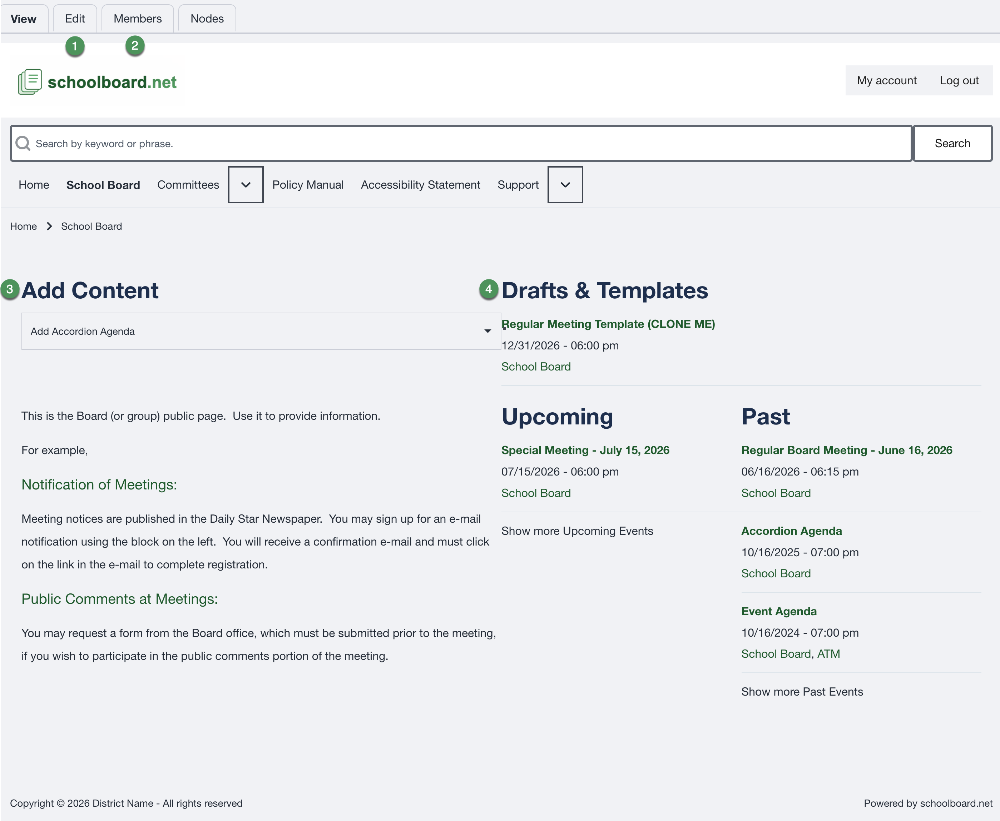
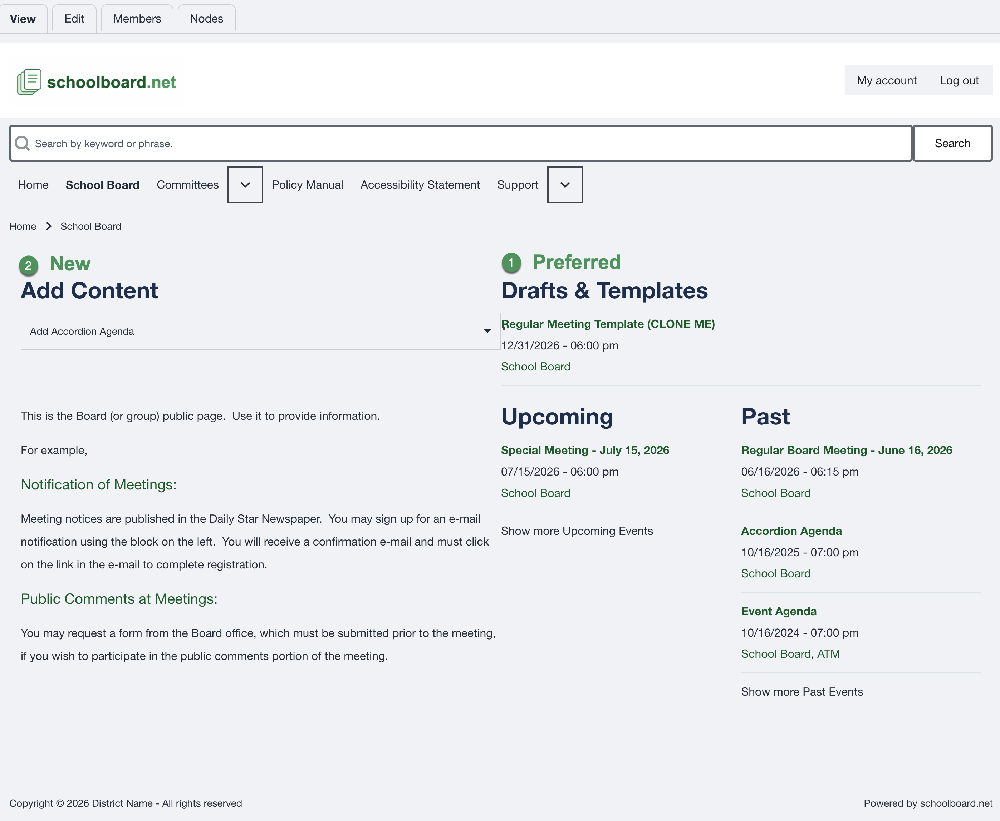
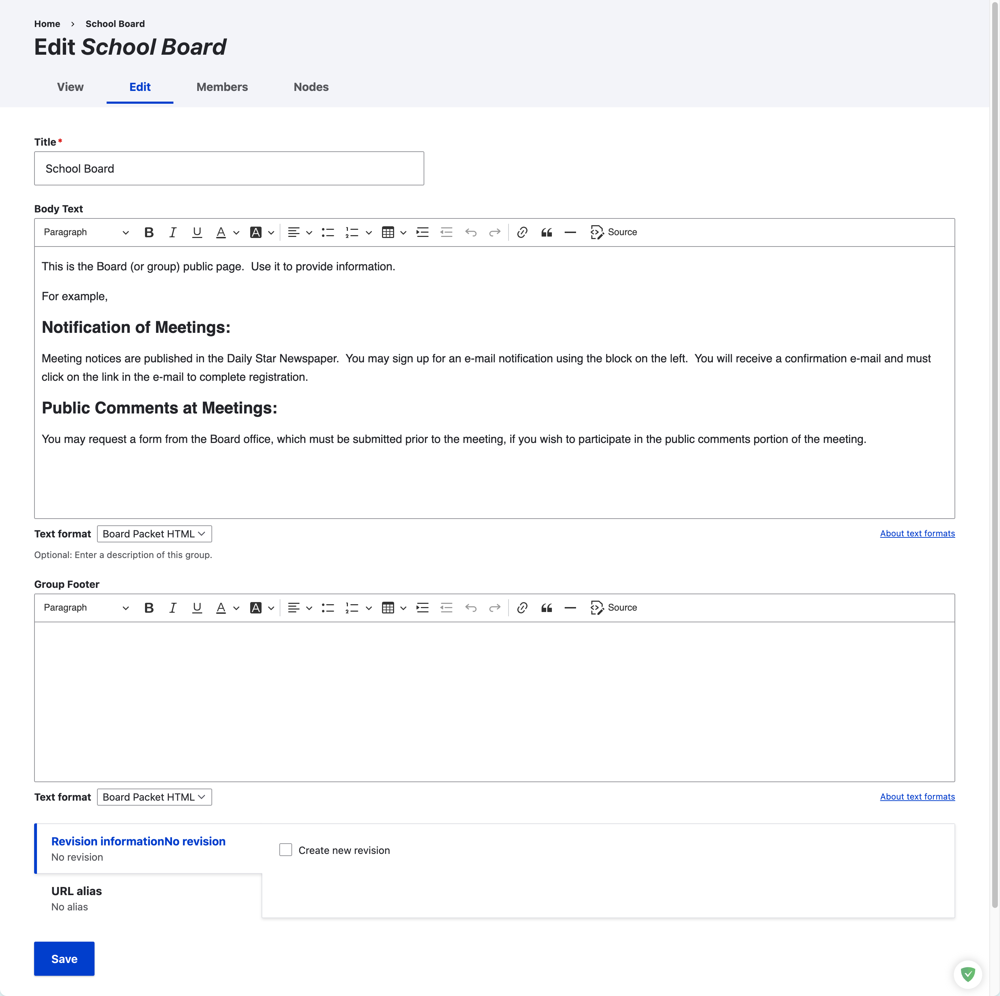

Understand the Group Home Page¶
When you are signed in as a Group or District Administrator, the group home page provides the main tools for managing that group.

Main administrator tools¶
-
Edit
Update the content displayed on the group home page. -
Members
View and manage the users assigned to the group. -
Add Content
Create new group content, including an Accordion Agenda built from scratch. -
Drafts & Templates
Open unpublished content and reusable agenda templates.
Preferred way to create an Accordion Agenda¶
Most agendas should be created by cloning a template.

Preferred method: Drafts & Templates¶
Open Drafts & Templates, locate the appropriate meeting template, and clone it. This preserves recurring sections, formatting, and standard content.
Alternative: Add Content¶
Use Add Content when no suitable template exists and the agenda must be built from scratch.
Best practice
Use templates for recurring meeting types. Consistent templates reduce preparation time and help prevent accidental changes to the agenda structure.
Edit the group home page¶
Select Edit on the group home page to update the public information for the group.

Review the title, body text, and optional group footer before saving. Create a new revision when the district wants a record of the change.
Warning
The group title and basic page structure should remain consistent unless the district has approved a change.